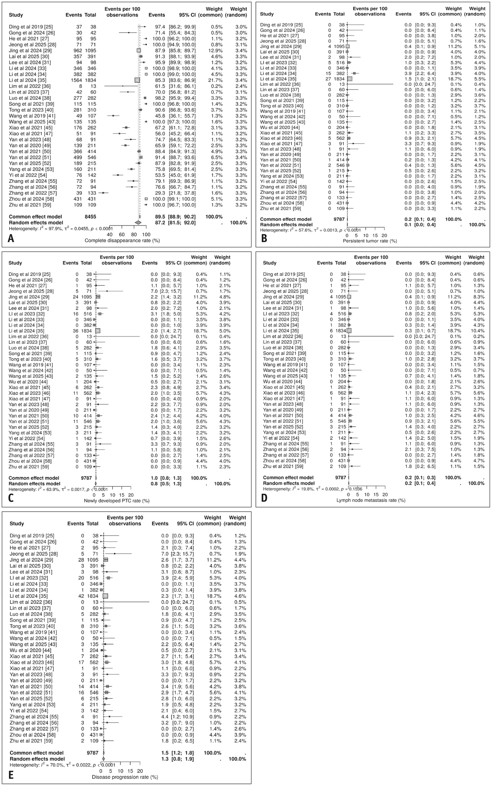
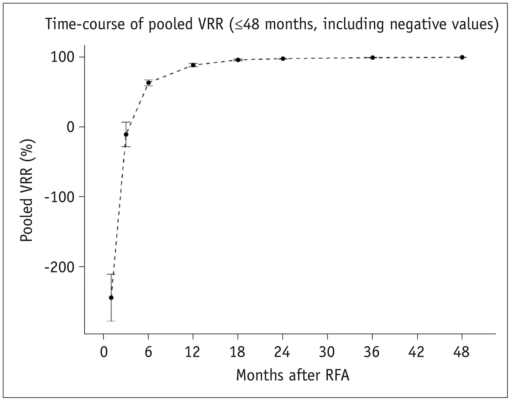
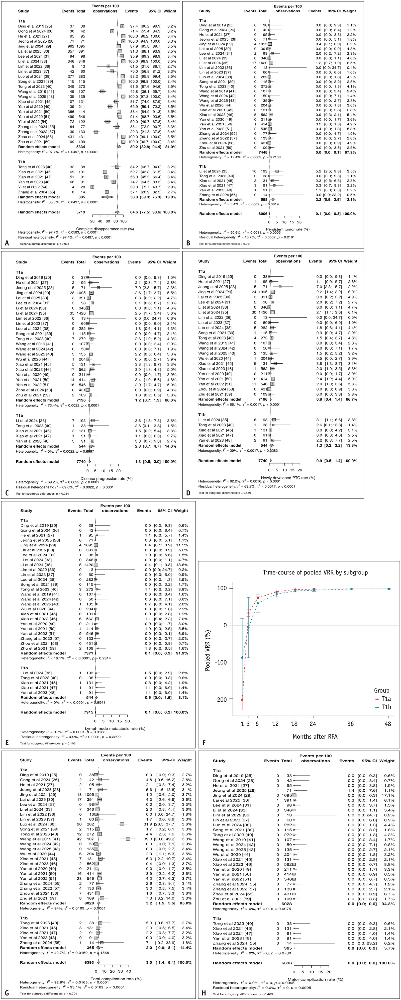
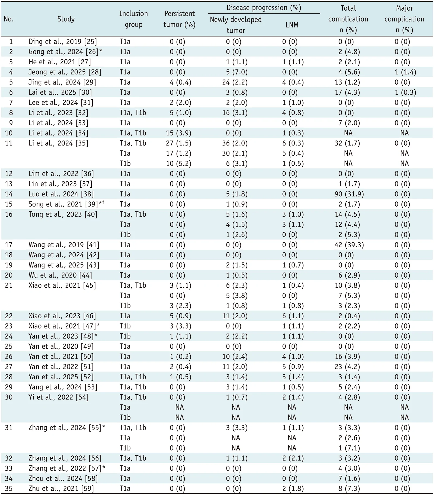

IR Weekly Literature Digest · Full-text analysis
Radiofrequency Ablation for Low-Risk T1N0M0 Papillary Thyroid Carcinoma: A Systematic Review and Meta-Analysis.
Korean J Radiol. 2026 Sep 14;27(10):982–1004. doi: 10.3348/kjr.2026.0042
Read the original articlePubMedOverview
This PROSPERO-registered systematic review and meta-analysis pooled 35 mostly retrospective, single-arm studies (9,477 patients, 9,787 low-risk T1N0M0 PTCs; 32 from China) of US-guided RFA as primary treatment. The pooled complete disappearance rate was 87.2% (95% CI, 81.5%-92.0%; I2 = 97.9%), the persistent-tumor rate was 0.1%, and the disease-progression rate was 1.3%. Disease progression was mostly new intrathyroidal tumors, and nodal metastasis was 0.2%. Total complications were 2.7% and major complications were 2 in 9,405. Volume reduction reached about 99% by 36 months. T1b tumors had a much lower complete disappearance rate than T1a (58.8% vs 89.2%). Heterogeneity was extreme and the evidence is observational and uncontrolled. The authors themselves call the findings hypothesis-generating.
Study design
Systematic review and meta-analysis, PROSPERO CRD420251135714, following PRISMA. MEDLINE, EMBASE, Cochrane and KoreaMed were searched from January 2000 to March 2025, English only. Two reviewers screened and extracted data independently. 2,877 records were found, 123 full texts were assessed, and 35 studies were included. Studies were conducted 2008-2025, 30 retrospective and 5 prospective. Six were comparative RFA-vs-surgery studies, of which only the RFA arm was extracted. Random-effects DerSimonian-Laird pooling was used with Freeman-Tukey transformation, except crude Clopper-Pearson rates for sparse events. Subgroup comparison used meta-regression. Other analyses were meta-regression, Egger test, leave-one-out analysis and RoBANS-2 risk of bias.
Patients
Adults with cytology- or histology-confirmed low-risk PTC (T1a <=1 cm; T1b >1 to 2 cm; N0M0) treated with US-guided RFA as primary definitive therapy. Excluded: other thermal modalities without separate RFA data, overlapping cohorts, reviews, case reports and abstracts, and non-English papers. Mean age across studies was 37-66 years and 62%-91% of patients were female. Mean follow-up was 6-146 months. Mean baseline diameter was 4-14 mm and mean volume 27-1,083 mm3. 23 studies enrolled T1a only, 2 T1b only, and 10 both. Only 5 of those 10 reported T1a and T1b results separately. T1b data therefore come from few studies (Table 3 shows T1b subgroup data in only a handful).
Intervention and comparator
US-guided RFA as sole treatment, with single-arm pooling of the RFA cohorts. No comparator was analysed. Electrode types, power settings, ablation technique (for example moving-shot), hydrodissection and operator experience were not extracted or analysed; the authors note this as a source of heterogeneity. Complete disappearance was variably defined (no visible lesion or scar-like lesion on US, sometimes with CEUS or pathology). Persistent tumor was viable residual tumor on early imaging. Disease progression was defined as new tumors plus lymph node metastasis. Major complications were events needing additional intervention, surgery or prolonged hospitalization.
Results
| Complete disappearance rate (primary efficacy) | 87.2% (95% CI, 81.5%-92.0%), I2 = 97.9%, P < 0.001. Most lesions disappeared within 12-24 months. Study-level rates in Table 2 range from 29.3% to 100%. |
|---|---|
| Persistent-tumor rate | 0.1% (95% CI, 0%-0.4%; I2 = 57.6%). The authors note this may overestimate true incomplete ablation because some lesions classified as persistent later regressed with pathologic absence of tumor. |
| Disease progression (new tumors + LNM) | 1.3% (95% CI, 0.8%-1.9%; I2 = 70.0%). Newly developed tumors 0.8% (0.5%-1.3%; I2 = 63.9%); lymph node metastasis 0.2% (0.1%-0.4%; I2 = 19.8%). No local progression at the ablation zone and no distant metastases were reported. |
| Volume reduction ratio over time | 6 months 63.4% (59.2%-67.5%); 12 months 88.7% (86.4%-91.0%); 18 months 96.1% (95.0%-97.3%); 24 months 97.9% (97.2%-98.6%); 36 months 99.4% (99.1%-99.7%); 48 months 99.8% (99.7%-100%). I2 was 86.9%-99.6% at all timepoints. |
| Total and major complications | Total 2.7% (1.4%-4.3%; I2 = 93.0%). Major complications 2 of 9,405 (0.02%; 0%-0.1%). Voice change 0.6% (0.3%-1.1%), mostly transient. Permanent voice change 1 of 9,405 (0.01%; 0%-0.1%). |
| T1a vs T1b: complete disappearance and persistent tumor | Complete disappearance 89.2% (82.8%-94.4%) vs 58.8% (39.3%-76.9%), P < 0.001. Persistent tumor 0.02% (0%-0.1%) vs 2.2% (0.9%-3.9%), P < 0.001. |
| T1a vs T1b: progression, safety and VRR | Disease progression 1.2% vs 2.3% (P = 0.234); new tumors 0.8% vs 1.3% (P = 0.449); LNM 0.1% vs 0.6% (P = 0.103); total complications 3.2% vs 2.0% (P = 0.794). VRR at 24 months 98.6% (T1a) vs 96.0% (T1b); both near-complete by 36-48 months. |
| Meta-regression | Publication year was associated with complete disappearance (beta 0.05/year; P = 0.021; R2 9.4%). Comparative-arm extracted studies had lower rates than retrospective single-arm studies (beta -0.247; P = 0.013). No moderator was significant for progression or complications. R2 was under 10%, and residual I2 was 70%-98%. |
| Publication bias and risk of bias | Egger test was non-significant for all outcomes except major complications (P = 0.003, attributed to sparse events). RoBANS-2: 85.7% of studies had unclear selection of participants, and 20% had high risk for participant comparability. |
Key figures




Safety
Total complications were 2.7% (95% CI, 1.4%-4.3%; I2 = 93.0%). Rates by study ranged from 0% to 39.3% (Wang 2019: 39.3%; Luo 2024: 31.9%), which suggests very inconsistent definitions or ascertainment. Most events were transient voice change or hematoma and resolved with conservative care. Major complications (defined by the standardized image-guided ablation reporting criteria) were 2 of 9,405. One of these was a permanent voice change. The text lists hypothyroidism as a major-complication example, yet no such events are reported. The complication grading system used in the individual studies is not specified, and 1 study (Li 2024 [34]) did not report complications. Rates were similar in T1a and T1b, but T1b data were sparse (2.0%; 0%-8.1%).
Strengths
- Largest RFA-specific synthesis, with 9,787 tumors, and a registered protocol with PRISMA reporting
- Two independent reviewers screened and extracted data, with predefined PICO and exclusion of mixed-modality studies and overlapping cohorts (9 excluded)
- Clear separation of persistent tumor from disease progression, and transparent handling of sparse-event outcomes
- Novel time-course VRR data and T1a vs T1b subgroup analysis, useful for interpreting follow-up imaging
- Meta-regression, Egger test, leave-one-out analysis and risk-of-bias assessment performed; authors candidly note heterogeneity
Limitations
- Almost entirely retrospective single-arm data (30 of 35 studies), mostly from China (32 studies), possibly with overlapping institutional cohorts despite the exclusion step; generalizability to Western practice is limited
- Extreme and largely unexplained heterogeneity (I2 up to 97.9%; moderators explained <10%), so pooled point estimates are of limited meaning; prediction intervals were mentioned but not reported in the text
- No comparator (surgery, active surveillance) was pooled, so the findings cannot support claims of oncologic equivalence; no recurrence-free survival or time-to-event analysis was done
- Pooled proportions ignore the very different follow-up durations (6-146 months); rates of progression and complete disappearance are time-dependent and cannot be compared across studies
- The 87.2% complete disappearance with 0.1% persistent-tumor rate leaves about 13% of tumors unaccounted for; the 'incomplete involution' category is not pooled, and complete-disappearance definitions vary. No pathologic or biopsy proof of cure is required
- Persistent tumor rate of 0.1% likely reflects lax or inconsistent ascertainment (biopsy was not routine); the claim that incomplete ablation is exceedingly rare is therefore not secure
- Disease progression excludes persistent tumors and was built only from new tumors plus LNM. Its calling of new tumors as 'not ablation failure' (assumed multifocal disease) is an interpretation, not shown
- T1b data come from few studies, with possible selection of smaller T1b lesions; the T1b CIs are wide, and the 'no difference in progression' result (P = 0.234) reflects low power rather than equivalence. Only 5 of 10 mixed-size studies reported T1a and T1b separately
- VRR pooling has unstable inputs: negative values and extreme SDs at early timepoints (for example -2,813%), and some studies report no SD or a 100% value; pooled means with 100%/0 SD are implausibly precise. VRR is also affected by subjective volume measurement
- Dose-response and technique variables (power, electrode, hydrodissection, operator experience) were not analysed; a subgroup 'comparative-arm extracted' studies had significantly lower complete disappearance, showing study-design dependence
- Funnel plots and Egger tests on proportion data are unreliable; RoBANS-2 rated 100% of studies low risk for confounding, which is questionable for uncontrolled retrospective series; English-only search
- Major complication estimates rest on 2 events; the reporting of complication severity is inconsistent (range 0%-39.3% per study)
- Post-hoc statements such as 'RFA reaffirmed' are not strongly supported given the authors' own caveats
In context
The authors position this as an RFA-specific update to earlier meta-analyses that mixed thermal modalities, had short follow-up, and lacked tumor-size subgroup and longitudinal VRR analysis. They cite recent meta-analyses comparing RFA with surgery that reported comparable recurrence-free survival, fewer complications and better thyroid-function preservation. They also note the 2025 ATA guideline adoption of thermal ablation for low-risk PTC and the new CPT codes 60660 and 60661. Their findings are said to align with the known histopathologic evolution of the ablation zone (coagulative necrosis, fibrosis, resorption). They acknowledge that T1b evidence remains limited relative to T1a and that heterogeneity persisted despite restricting to RFA.
Implications for practice
The pooled data show that RFA of low-risk T1N0M0 PTC in selected patients has very low rates of major complications, nodal metastasis, and documented local progression, with near-complete involution by about 24-36 months. IRs can use the VRR trajectory (about 63% at 6 months, 89% at 12 months, 98% at 24 months) when interpreting follow-up imaging. A residual ablation zone at 1-2 years is the expected course and does not by itself indicate residual cancer. T1b tumors have lower complete disappearance (58.8%) and more persistent foci (2.2%), which suggests careful treatment planning for complete coverage and closer or longer surveillance, but the T1b evidence is thin and probably selected. Confidence is low-to-moderate: the evidence is uncontrolled, short to medium term, largely from high-volume Chinese centers, and highly heterogeneous. It does not show equivalence with surgery or active surveillance, and the results should not be used as stand-alone expected outcome figures for individual counseling. Patient selection (multidisciplinary, ATA 2025 guidance), operator expertise, and biopsy for suspicious residual or new lesions remain important. Prospective, standardized comparative studies, particularly for T1b and outside Asia, are needed.